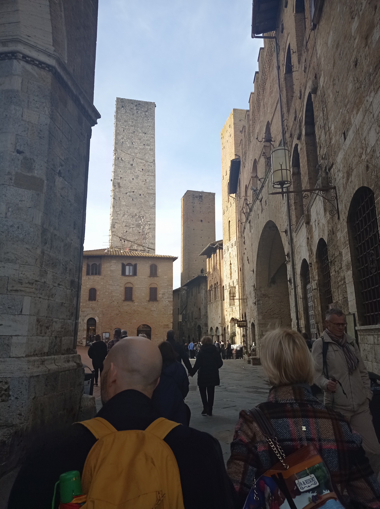
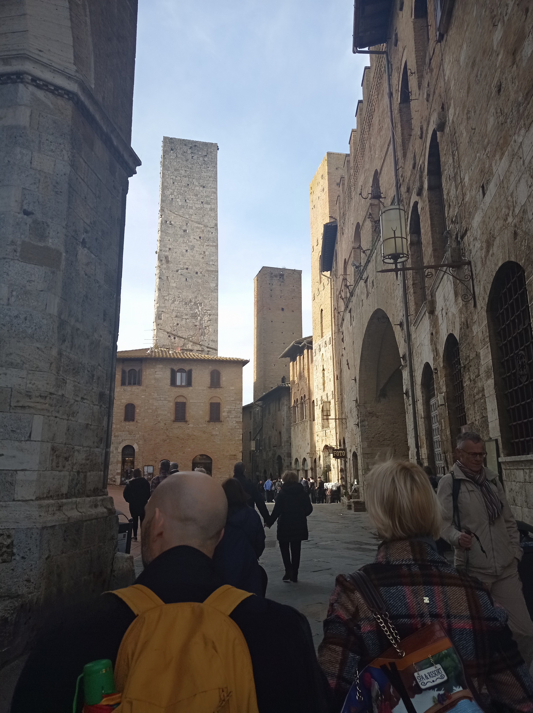

Nel pomeriggio del terzo giorno ci siamo trasferiti a San Gimignano(famosa per le sue mura e soprattutto per le sue torri), infatti con questa prima foto si possono vedere le mura tra cui è racchiuso il paese, e a destra la storica porta San Giovanni(risalente al 1200).

Alcune foto dei particolari vicoli di San Gimignano.
 
Alcune foto delle torri in pietra di San Gimignano, che attualmente sono 14, ma in passato erano 72, la più alta è di 52 metri.
Con queste foto possiamo ammirare la splendida vista che si ha da San Gimignano sulle colline del Chianti(famose per il vino che viene prodotto).
Questa è piazza della Cisterna, piazza triangolare circondata da edifici medievali che prende il nome dalla cisterna del 1287 che si trova al centro di essa.
Nel mezzo della nostra gita ci siamo imbattutti nella gelateria Dondoli, situata in piazza della Cisterna, essa ha vinto il premio per il gelato più famoso del mondo 2024.
Come ultima tappa del giorno abbiamo visitato piazza del Duomo e il Duomo (solo dall'esterno), anche essa caratterizzata dalla presenza di svariate torri oltre al Duomo.